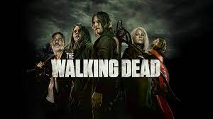

THE WALKING DEAD
The Walking Dead é uma série de televisão dramática e pós-apocalíptica norte-americana, desenvolvida por Frank Darabont, e baseada na série em quadrinhos de mesmo nome de Robert Kirkman, Tony Moore e Charlie Adlard. A série é exibida pelo canal AMC e é protagonizada por Andrew Lincoln como o vice-xerife Rick Grimes da primeira à nona temporada. Após a saída de Lincoln, a série passou a ser protagonizada pelos veteranos de elenco, Norman Reedus e Melissa McBride. Outros membros do elenco de longa data incluem Steven Yeun, Chandler Riggs, Lauren Cohan, Danai Gurira, Josh McDermitt, Christian Serratos, Seth Gilliam e Ross Marquand. Saiba mais
BRAKING BAD

Breaking Bad é uma série de televisão americana criada e produzida por Vince Gilligan. Ela retrata a vida do químico Walter White, um homem brilhante frustrado em dar aulas para adolescentes do ensino médio enquanto lida com um filho sofrendo de paralisia cerebral, uma esposa grávida e dívidas intermináveis. White, então, é diagnosticado com um câncer no pulmão - o que o leva a sofrer um colapso emocional e abraçar uma vida de crimes para pagar suas dívidas hospitalares e dar uma boa vida aos seus filhos.[7] Walter resolve produzir metanfetamina de alta pureza com seu ex-aluno, Jesse Pinkman. Saiba mais